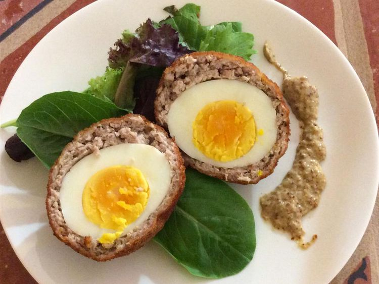

Home
Scotch Eggs

Scotch eggs with mustard sauce are part of the traditional Scottish breakfast, which also includes porridge, bacon, fried egg, sausage, black, white, and fruit puddings, and hot baps and jam. Scotch eggs are also sufficiently versatile to be served hot with gravy at teatime or cold as a snack.
Ingredients:
- 1 egg
- 1 cup mayonnaise
- 1/4 cup yellow mustard
- 2 tablespoons white sugar
- 6 eggs
- 2 quarts oil for deep frying
- 12 ounces ground pork sausage
- 1 tablespoon dried parsley, crushed
- 2 teaspoons grated lemon zest
- 1/4 teaspoon ground nutmeg
- 1/4 teaspoon dried marjoram
- salt and pepper to taste
- 1 egg, beaten
- 4 ounces dry bread crumbs
Directions:
- Crack 1 egg into a small saucepan and place over low heat. Stir in mayonnaise, mustard, and sugar. When mixture just starts to boil, remove the pan from heat. Let sit until cool, then chill in the refrigerator for at least 10 minutes.
- Place 6 whole eggs in a saucepan and cover with cold water. Bring water to a boil and cook eggs for 10 to 12 minutes. Remove from hot water, cool, and peel.
- Heat oil in a deep-fryer to 375 degrees F (190 degrees C).
- Combine sausage, parsley, lemon zest, nutmeg, marjoram, salt, and pepper in a bowl; mix well with your hands. Coat each hard-boiled egg with sausage mixture, working it with wet hands to form an even layer around egg.
- Roll covered eggs in beaten egg, followed by bread crumbs.
- Fry eggs, 3 at a time, in hot oil until they turn deep golden brown, 4 to 5 minutes. Turn them as they cook, so they brown evenly. Remove with a slotted spoon, drain on paper towels, and repeat with remaining 3 eggs.
- Serve eggs warm with mustard sauce.